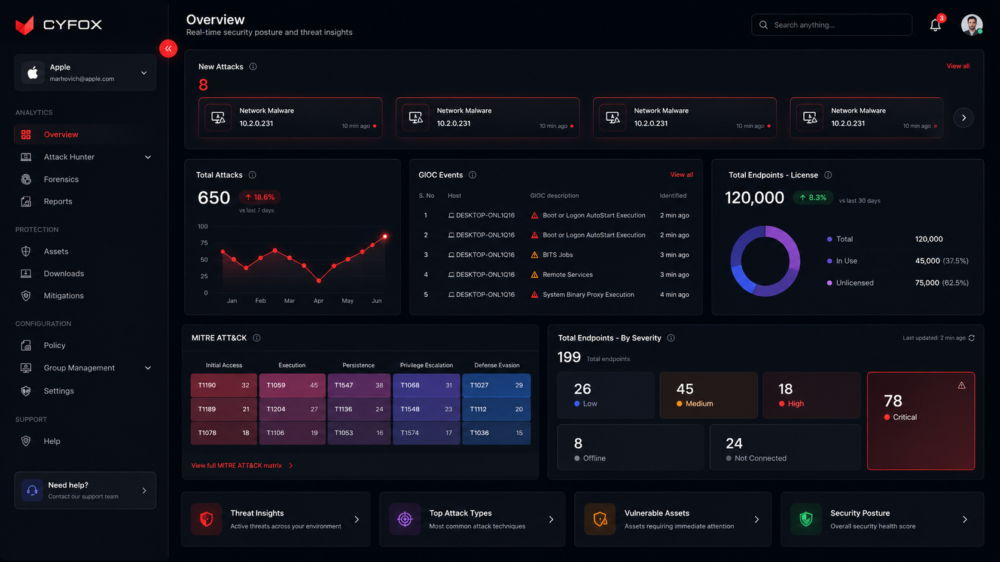
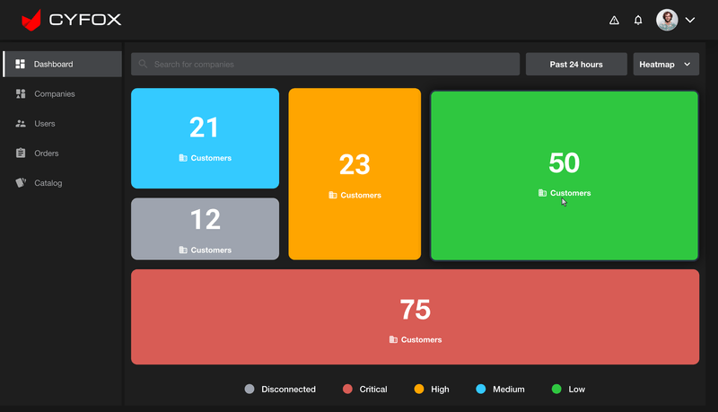
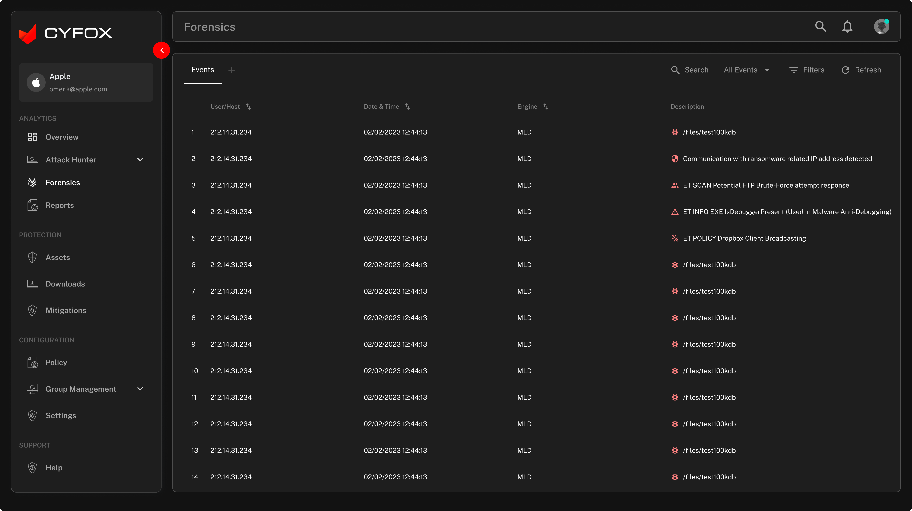
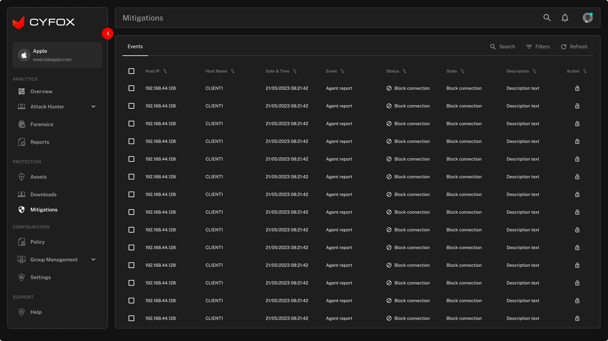
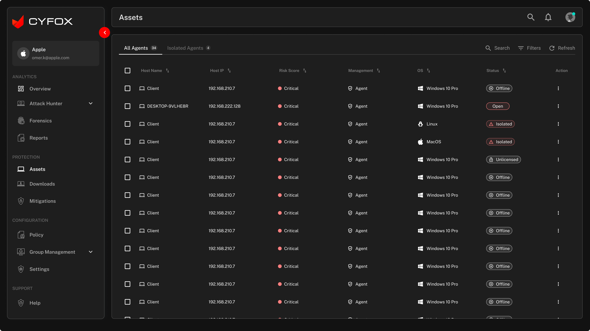

Large volumes of security data
Tables, events, statuses, devices and technical attributes had to remain scannable.
Redesigning a complex cybersecurity platform around clearer hierarchy, faster scanning, and more structured investigation.

A cybersecurity product can expose enormous depth without making the experience feel equally complex.
CYFOX brought together monitoring, assets, forensics, mitigations, users, reports and system configuration. The redesign opportunity was not simply to make individual screens look newer.
The goal was to establish a clearer product model: understand the security state → investigate the detail → act on what matters.
The challenge was managing complexity across multiple operational layers.
Tables, events, statuses, devices and technical attributes had to remain scannable.
Monitoring, investigation, remediation and administration required different interaction patterns.
Users needed a high-level security picture and a path into technical investigation.
The experience needed to connect what users saw with what they could investigate or change.
The redesign focused on product coherence rather than isolated visual polish.

Multiple product areas and dense information competing for attention.
A stronger application shell, clearer hierarchy and more consistent operational patterns.
The redesign was a product-design problem, not only a UI exercise.
I collaborated with product, engineering, QA and stakeholders while using research, workshops, journey mapping and usability-oriented review to refine the experience.
The case study focuses on decisions and artifacts that can be supported by the supplied product screens; no unsupported performance metrics are claimed.
The product model became easier to reason about when operational jobs were grouped into a predictable structure.
Three decisions shaped the redesigned experience.
Problem Important security information competed with detailed operational data.
Decision Establish an overview layer that communicates current state before users enter investigation.
UI consequence Summary cards, trends, event signals and severity are grouped into a clear first-level dashboard.
Problem Observing activity and investigating an event are different cognitive jobs.
Decision Give monitoring and forensics distinct product surfaces while keeping them inside one shell.
UI consequence Attack Monitor and Forensics become predictable destinations instead of competing dashboard regions.
Problem Security users still need technical detail even when the interface is simplified.
Decision Use consistent tables, filters, status/severity treatments and clear action placement.
UI consequence Assets, Forensics and Mitigations share a recognizable operational grammar.
The redesigned overview establishes a hierarchy from posture to investigation.
Give users an immediate sense of the current environment.
Surface events and trends that deserve attention.
Make priority legible without overwhelming the interface.
Connect overview information to deeper operational areas.
The redesign turns separate screens into a clearer operational journey.


Consistency becomes especially important when users repeatedly scan tables and filters.



The redesign needed reusable rules, not a collection of individually polished screens.
Typography, spacing and restrained color establish predictable emphasis.
Tables, cards, filters, navigation, states and actions follow shared patterns.
Status, severity, selection and action treatments stay recognizable across workflows.
The same system supports overview, investigation, mitigation and administration.
Administration is part of the product experience too. The redesigned settings area keeps configuration inside the same visual and navigational system.

Validation focused on whether the redesign made complex operational tasks easier to understand and navigate.
Review whether the overview communicates posture before detail.
Check whether monitoring, investigation, assets and mitigation feel distinct.
Review tables, filters, severity and action placement.
Compare repeated patterns across operational areas and administration.
The redesign brought a clearer operating model to a technically complex cybersecurity product.
Fragmented surfaces
+ dense information
+ competing
hierarchy
Monitor
→ Understand
→ Investigate
→ Act
The CYFOX redesign was an exercise in making a technically complex cybersecurity product easier to navigate, interpret and act on — without simplifying away the depth that expert users need.